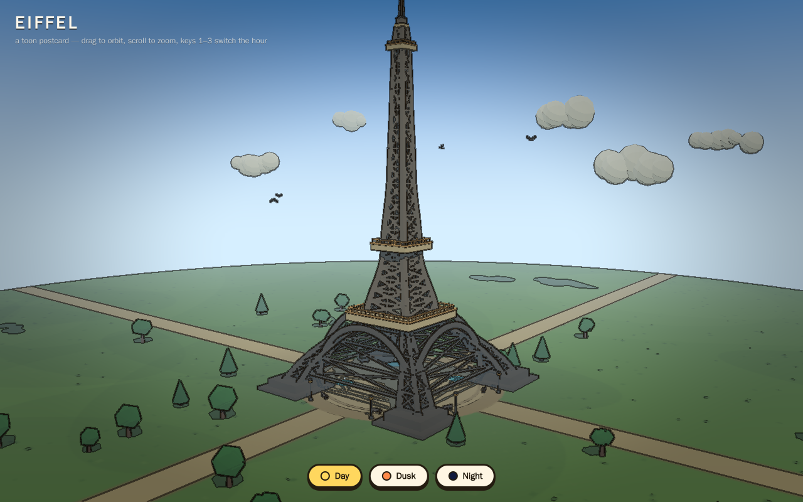
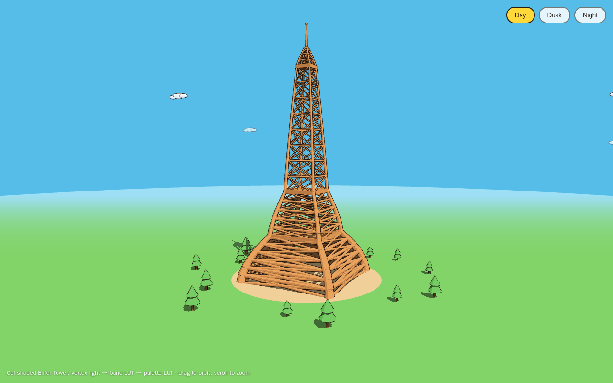

Qwen3.8-27B
Hosted · provider-servedOpenRouter
Tasks run2
Working results2 of 2
Attempts2
Generated tokens192.7K
Results
Every attempt, newest first per task. Faded rows are earlier attempts that were retried.
| Task | Run ended · judged page | Generated | Reasoning | Model calls | Tool errors | Energy | Wall | |
|---|---|---|---|---|---|---|---|---|
 |
Eiffel Tower (open) 1 of 1 |
agent finished 1 canvas · 0 missing files · 0 page errors |
144.3K | 99.5K | 85 | 1 | – | 16 min |
 |
Eiffel Tower (spec) 1 of 1 |
agent finished 1 canvas · 0 missing files · 0 page errors |
48.4K | 34.3K | 50 | 0 | – | 6 min |
* Reasoning estimated from the raw stream where the engine reports one combined count. Wall time depends on hardware and is not ranked.
Pack and engine
- Model
- Qwen3.8-27B
- Quant
- Provider-served; precision not recorded
- Pack
- Provider-served (OpenRouter picks the provider; precision not recorded per run)
- Engine
- OpenRouter (provider chosen per request)
- Request
- {"provider": {"sort": "throughput", "allow_fallbacks": true}, "reasoning": {"effort": "high"}, "usage": {"include": true}}